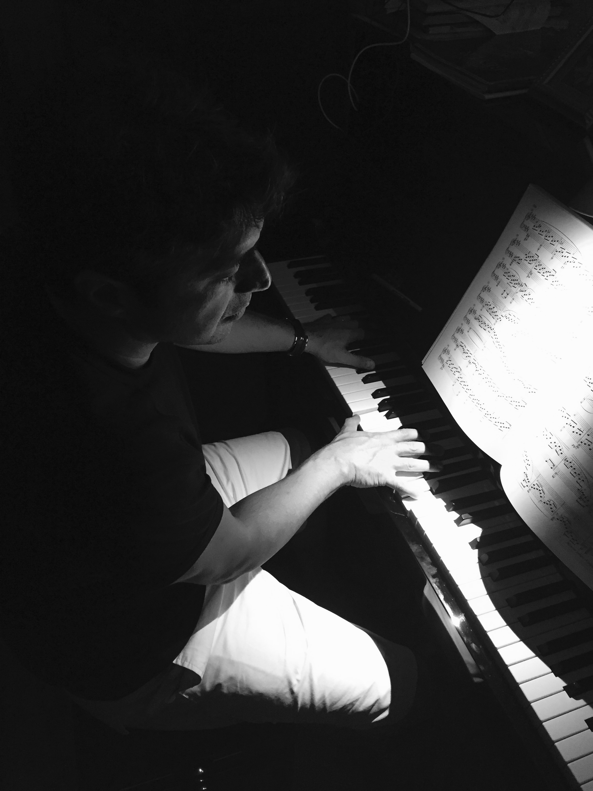

Hakkımızda
Yarışmanın temel amacı çocukların sanatsal bağlantılarını kuvvetlendirmek, ulusal - uluslararası müzik okulları ve öğretmenleriyle buluşma ve paylaşım alanı yaratabilmek, piyano müziği alanında yeni yetenekleri bulmak ve genç neslin kültürel eğitiminin önemli bir parçası olarak klasik piyano müziğini teşvik etmek, hatta kariyerinin başlangıcında olan yetenekli piyanistleri desteklemektir. Bu yarışma sayesinde çocuklar kendi çevrelerinin dışında bir platformda sahne alma, kendilerini deneme ve tecrübe kazanma şansına sahip olarak amatör ruhun şevkini ve tutkusunu ödüllendirebileceklerdir.
-

-
Ahmet Levent Atlıer, Piyano
Hisar Okulları Müzik Bölüm Başkanı
Yarışma Koordinatörü
1971 İstanbul doğumlu Levent Atlıer, piyano çalışmalarına İstanbul Devlet Konservatuvarında Piyano Öğretmeni Doç. Sibel Kurtbey’le başladı. Önder Bali ile armoni çalışmalarına piyano ile birlikte devam etti.
1990 yılında Marmara Üniversitesi Müzik bölümüne girdi.Anasanat dalı piyano eğitimi alan Levent Atlıer.Üniversitede piyano çalışmalarını Prof. Dilek Yonat Batıbay ‘la sürdürdü.
Eş zamanlı olarak Ali Darman’la piyano dersleri almaya devam etti.
2002 Yılında Hisar Okullarında müzik öğretmenliğine başlayan Levent Atlıer, 2003 yılından beri Müzik Bölüm Başkanlığı görevini sürdürmektedir.
Nail Yavuzoğlu ile Flüt ve Caz armonisi çalışan Levent Atlıer.Hisar Okullarının müzikte branşlaşmaya geçişini sağlamış ve oluşturduğu orkestralarla alınan ulusal ve uluslararası başarılarda önemli pay sahibi olmuştur.
Profesyonel müzisyen olan Levent Atlıer Fikret Kızılok,Bora Öztoprak,AF grubu gibi sanatçı ve gruplarla sahne çalışmalarının yanı sıra CornFlakes grubunun kurucularındandır.
Hisar Okulları 2. Uluslararası Piyano Yarışma Şartname
Amaç:
Yarışmanın temel amacı çocukların sanatsal bağlantılarını kuvvetlendirmek, Ulusal - Uluslararası müzik okulları ve öğretmenleriyle buluşma ve paylaşım alanı yaratabilmek, piyano müziği alanında yeni yetenekleri bulmak ve genç neslin kültürel eğitiminin önemli bir parçası olarak klasik piyano müziğini teşvik etmek, hatta kariyerinin başlangıcında olan yetenekli piyanistleri desteklemektir. Bu yarışma sayesinde çocuklar kendi çevrelerinin dışında bir platformda sahne alma, kendilerini deneme ve tecrübe kazanma şansına sahip olarak amatör ruhun şevkini ve tutkusunu ödüllendirebileceklerdir.
-
Yarışma, Hisar Okullarında 9-10 Haziran 2018 tarihleri arasında kategorilerinde finale kalan yarışmacıların canlı performanslarıyla gerçekleşecektir.
-
Yarışmaya, resmi-özel konservatuvarlarda eğitimine devam eden tam zamanlı öğrenciler katılamaz. Yarışma, 6-18 yaş arası resmi-özel okullarda eğitim gören öğrenciler ve bu şartları taşıyan tüm yabancı Ülke öğrencilerine açıktır.
-
Kişinin açık rızası olmak kaydıyla, Her Ulustan adaylar yarışmanın resmi sitesindeki başvuru formunu doldurarak video kaydı verilen link üzerinden mp4 formatında yükleyerek en geç 2 Mayıs 2018 Çarşamba günü saat 23:59’a kadar başvurularını tamamlamalıdır. Katılımcıların öğrenci belgesini,banka dekontunu tarayarak başvuru formuna yüklenmesi gerekmektedir.
-
İstenen belgeler tamam olmadığı takdirde başvuru tamamlanmamış sayılacaktır.
-
Yarışma 5 kategoriden oluşacaktır:
-
A kategorisi: 6-7 yaş
-
B kategorisi: 8-9 yaş
-
C kategorisi: 10-12 yaş
-
D kategorisi: 13-15 yaş
-
E kategorisi: 16-18 yaş
-
Her kategoriden 15 aday finale kalmaya hak kazanacaktır.
-
Final yarışmasındaki her kategori, 9-10 Haziran 2018 tarihinde Hisar Okullarında canlı performans olarak, halka açık yapılacaktır.
-
Ödül töreni, yarışmanın yapıldığı salonda 11 Haziran 2018 Pazartesi günü saat:18:00 de gerçekleşecektir. Finalde yarışan adaylar ödül töreninde yer almak zorundadır. Törende bulunmayan adaylar ödül üzerinde hak talep edemez.
Ödül töreninde kıyafet zorunluluğu vardır. Kıyafetler günlük kıyafetin ötesinde sahne ve ortama uygun olmalıdır.
-
Tüm katılımcılar çalacakları programı başvuru formunda belirtmek zorundadır. Ön eleme video yoluyla yapılacaktır ve kayıtta kullanılan eserler yarışmada da seslendirilebilir. Ön eleme videosunda katılımcı seslendireceği eseri seçme konusunda serbesttir. Finale kaldığı takdirde başvuru formunda belirttiği eseri icra etmek zorundadır. Videoların süreleri aşağıda belirtilen süreleri aşmamalıdır.
-
A kategorisi: 1 dakika
-
B kategorisi: 2 dakika
-
C kategorisi: 3 dakika
-
D kategorisi: 4 dakika
-
E kategorisi: 5 dakika
-
Katılımcı sadece tek bir video gönderme hakkına sahiptir, gönderilen ilk video dışındakiler dikkate alınmayacaktır.
-
Yarışmada çalınacak eserlerin ezber olması zorunlu değildir.
-
Jüri kararı kesindir ve hiçbir şekilde değiştirilemez.
-
Final turunda belirtilmiş zamanda sahnede yer alamayan katılımcıya ek bir katılım hakkı verilmeyecektir.
-
Dereceye giren yarışmacılar, izin verdiği takdirde, yarışma komitesinin yarışma boyunca ses ve görüntü kaydı yapması sağlanır. Bunlar tanıtım amacı ile yayınlanabilir. Yayın hakkı Hisar Okulları’na aittir.
-
Yarışmanın katılım ücreti 200 TL'dir. Yarışmacıların yol ve konaklama giderleri kendilerine aittir.
TL Hesap bilgileri:
Hesap Adı: Hisar Eğitim Vakfı İktisadi İşletmesi
Banka Adı: Akbank
Şube Adı: Göktürk Şubesi
Şube Kodu: 882
TL Hesap no: 16630
IBAN: TR72 0004 6008 8288 8000 0166 30
-
Katılımcılar başvuru yaptıkları anda, kuralların tamamını kabul etmiş olurlar.
-
Katılımcı çalacağı eserleri seçme konusunda serbesttir. Finale kaldığı takdirde başvuru formundaki eseri icra etmek zorundadır. Belirtilen süreleri geçmeleri halinde performansları kesilebilir.
-
A kategorisi: 2 dakika
-
B kategorisi: 4 dakika
-
C kategorisi: 6 dakika
-
D kategorisi: 8 dakika
-
E kategorisi: 11 dakika
-
Kategori ödülleri puanlama sistemine göre verilecektir.
-
95-100 puan: 1.’lik kategorisi belgesi
-
90-94 puan: 2.’lik kategorisi belgesi
-
85-89 puan: 3.’lük kategorisi belgesi
-
80-84 puan: 4.’lük kategorisi belgesi
-
79 puan ve altına ise katılım belgesi verilir.
Her kategorinin en yüksek puan alarak birinci seçilen yarışmacısı 1000 TL para ödülü kazanacaktır.
Yine jüri kararıyla tüm kategorilerin en yüksek puanlı birincileri arasından seçilen bir yarışmacı, jüri kararıyla, büyük ödül olan akustik piyanonun sahibi olacaktır.